교통기사 (2003-05-25 기출문제)
1과목: 교통계획
1. 어느 도심지의 주차요금에 대한 수요탄력치가 –0.2이며, 이 지역의 피크 한시간당 주차요금이 3,000원인데 주차수요는 10,000대가 된다. 주차요금이 25% 인상될 때 수요의 감소량은 얼마인가?
- 250대
- 500대
- 750대
- 1000대
(정답률: 73%)

2. 출발지, 목적지별 교통량조사(Origin and Destination Survey)방법에 해당되지 않는 사항은?
- 터미널조사(Terminal Survey)
- 폐쇄선조사(Cordon line Survey)
- 시험차 주행에 의한 방법(Moving Survey)
- 가구방문조사(Home interview Survey)
(정답률: 84%)
3. 통행희망선도(Traffic Desire Lines)는 다음 중 어느 조사 결과에 의하여 작성될 수 있는가?
- 회전 교통량 조사
- 가로구간 교통량 조사
- O - D 조사
- 승하차 인원수 조사
(정답률: 알수없음)
4. 다음 중 승용차 환산계수(pce)를 결정하는데 고려사항으로 볼수 없는 것은?
- 통행차량의 최고속도
- 도로의 경사도와 경사구간의 길이
- 차량의 종류
- 차종구성비
(정답률: 42%)
5. 교통수요예측모형은 분석구조측면에서 집계형(Aggregate)과 비집계형(Disaggregate), 확률형(Probabilistic)과 결정형(Deterministic), 동시형(Simultaneous)과 연쇄형(Sequential)으로 구분할 수 있다. 종래의 전통적인 4단계 수요추정모형은 위의 어느형에 속한다고 볼 수 있는가?
- 집계형 - 확률형 - 동시형
- 집계형 - 결정형 - 연쇄형
- 비집계형 - 확률형 - 연쇄형
- 비집계형 - 결정형 - 동시형
(정답률: 알수없음)
6. 집계 로짓모형을 이용하여 각존별 교통수단분담율을 추정하고자 할 때 적합하지 않는 설명변수는?
- 통행시간
- 승용차보유여부
- 통행비용
- 차외통행시간(접근시간 등)
(정답률: 알수없음)
7. 교통량 배정의 목적으로 적합치 않는 것은?
- 현재와 장래의 교통망의 문제지점을 진단
- 교통망 대안의 평가
- 교통시설의 건설 우선순위 결정
- OD통행량 산출을 위한 기초 자료제공
(정답률: 60%)
8. 교통혼잡을 감안한 주행시간함수를 이용하여 최단경로에 교통량을 배정하는 방법은?
- all or nothing법
- 전환율 곡선법
- 카테고리 분석법
- 용량제약 노선 배정법
(정답률: 19%)
9. 다음 교통수요 추정모델중 개별행태 분석이 가능한 모형이 아닌 것은?
- 회귀분석법
- 로짓모형
- 프로빗모형
- 디트로이트모형
(정답률: 알수없음)
10. 추정된 장래 존간 통행량을 기존교통망에 부하시킴으로서 기존교통체계의 문제를 진단하고 여러가지 교통체계 대안을 검증할 수 있는 과정은 다음 중 어느 추정단계인가?
- 희망노선(Desire Line)
- 통행발생(Trip generation)
- 교통수단선택(modal split)
- 통행배분(Trip assignment)
(정답률: 알수없음)
11. 통행(Trips)은 목적을 가진 통행주체가 이동하기 시작하여 정지하기까지의 여행으로 정의하며, 수단통행(Unlinked trips)과 목적통행(Linked trips)으로 분류한다. 아래 그림은 한 사람이 집에서 회사로 출근할 때의 통행과정을 보여주고 있다. 다음 중 옳은 것은?
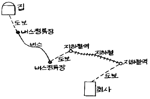
- 수단 통행수 = 5, 목적 통행수 = 1
- 수단 통행수 = 1, 목적 통행수 = 5
- 수단 통행수 = 1, 목적 통행수 = 1
- 수단 통행수 = 5, 목적 통행수 = 5
(정답률: 91%)
12. 세부가로 교통량 추정에 앞서서 개략적 노선수요파악을 위한 네트워크로서 주로 교통존중심(Zone Centroid)간을 연결하는 많은 삼각형으로 구성하는 네트워크는 다음 중 어느 것인가?
- 거미줄망도(Spider Web)
- 검사선(screen line)
- 교통지구도(Zone Map)
- 가로망도(Highway Network)
(정답률: 알수없음)
13. 새로운 교통수단의 도입에 따른 교통선호특성을 파악하기 위하여 설정된 가상적인 상황에 대하여 조사하는 방법을 무엇이라 하는가?
- RP(revealed preference)조사
- SP(stated preference)조사
- 패널(panel)조사
- 엑티비티다이어리(Activity daily)조사
(정답률: 80%)
14. 도로구간의 속도를 허용오차 2km/h의 수준으로 조사하기 위한 표본수를 결정하고자 한다. 유사한 도로(모집단)의 속도 표준편차가 10km/h로 나타나 있으며, 95%의 신뢰도에 대응한 표준화 변수 1.96을 이용하면 최소한 몇대 이상의 차량속도를 조사해야 하는가?
- 64대
- 97대
- 48대
- 76대
(정답률: 알수없음)
15. OD 조사를 전수화한 후 존간 통행량의 신뢰성을 검증 및 보완하기 위하여 필요한 조사는?
- 가구면접조사
- 스크린라인조사
- 터미널조사
- 노측면접조사
(정답률: 알수없음)
16. 교통존에 대한 설명 중 틀린 것은?
- 다양한 토지이용이 한존에 포함 되도록 한다.
- 행정구역과 가급적 일치시킨다.
- 간선도로는 존경계와 일치하도록 한다.
- 강· 산· 철도와 같은 지형적 경계를 교통존 경계로 일반적으로 적용한다.
(정답률: 84%)
17. 어느 주차장의 평균 주차시간은 2시간이다. 한대의 차량이 도착했을 때 이차량이 1시간미만 주차할 확률은? (단, 주차시간의 분포는 음지수분포를 따른다.)
- 33.3%
- 35.3%
- 37.3%
- 39.3%
(정답률: 알수없음)
18. 평균운행속도가 30km/h로서 편도20km의 노선을 운행하는 버스가 60명을 최대로 수송할 수 있다. 배차간격이 5분이면 필요한 차량규모는 얼마인가?
- 12대
- 16대
- 20대
- 24대
(정답률: 50%)
19. 최근 활발히 진행되는 ITS(Intelligent Transport Systems)의 목적이 아닌 것은?
- 도로이용의 효율성을 제고시키기 위하여
- 도로의 교통안전을 도모하기 위하여
- 환경에 미치는 악영향을 감소시키기 위하여
- 통행 발생량과 도착량을 정확히 예측하기 위하여
(정답률: 알수없음)
20. 가구당 통행발생량과 같은 종속변수를 소득이나 자동차보유대수 등의 설명변수의 범주에 따라 교차시켜 도출해내는 교차분류법의 추정모형은?
- 회귀분석법
- 원단위법
- 증감율법
- 카테고리분석법
(정답률: 알수없음)
2과목: 교통공학
21. 교통량이 180(대/시)라고 한다. 한 시간내에 도착하는 자동차 대수가 poisson 분포를 따른다고 가정할때, 1분간에 4대의 자동차가 도착할 확률은 얼마인가?
- 0.101
- 0.147
- 0.168
- 0.202
(정답률: 70%)
22. 어떤 차량이 시속 50KPH로 40km를 주행하고 60KPH로 20km를 40KPH로 50km를 주행하였다. 전체구간의 공간평균속도는?
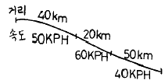
- 50.00km/hr
- 47.27km/hr
- 46.15km/hr
- 43.25km/hr
(정답률: 알수없음)
23. 도시 및 교외간선도로의 용량분석시 사용되는 주효과 척도는?
- 교통량 대 용량비
- 지체도
- 평균통행속도
- 지체시간 백분율
(정답률: 50%)
24. 다음 그림 중 곡선은 도로상 어떤 지점에서의 차량누적도착교통량(Cumulative number of vehicles arrived)을 시간에 따라 표시한 그림이고 직선은 그 지점의 교통 용량을 보인다. 이 그림을 설명한 것 중에서 틀린 것은?
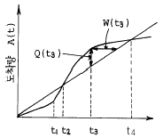
- 조사지점에서 시간 t2 까지는 용량상의 문제가 없다.
- t3에 대기행렬의 길이가 최대로 된다면 이때 그 길이는 Q(t3)로 나타 낼수 있다.
- t3에 도착한 차량은 W(t3)만큼 기다려야 그 지점을 통과한다.
- 이 지점에서 유입(流入)교통량이 용량을 초과 하는 시간대는 t2∼t4 이다.
(정답률: 75%)
25. 신호시간 결정에 있어 현시(顯視)간 전이시간(황색시간) 산정공식으로 맞는 것은? (단, y = 황색시간, t = 운전자 반응시간, v = 접근 속도, a = 임계감속도, w = 교차로의 폭, ℓ = 차량의 길이)
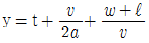
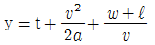
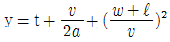
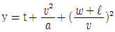
(정답률: 알수없음)
26. 신호 교차로의 용량에 영향을 주지 않는 요소는?
- 차로폭
- 종단구배
- 주차형태
- 마찰계수
(정답률: 알수없음)
27. 독립적으로 운용되거나(독립교차로)또는 2~3개 신호기가 연동되어 교통량의 큰 변동에 적합한 신호기는?
- 고정시간 신호기
- 전자 신호기
- 교통감응 신호기
- 교통조정 신호기
(정답률: 93%)
28. 교통류이론에서 교통류 특성을 설명할 수 있는 세가지 변수에 속하지 않는 것은?
- 속도
- 밀도
- 교통량
- 지체도
(정답률: 72%)
29. 다음 그림은 교통량과 밀도와의 관계를 보여주고 있다. 여기서 용량상태를 의미하는 밀도는?
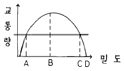
- A
- B
- C
- D
(정답률: 알수없음)
30. 출발하는 차량의 속도가 55km/시간이고 차량의 자유속도가 70km/시간일 경우의 충격파의 속도는?
- -10 km/시간
- -15 km/시간
- -20 km/시간
- -25 km/시간
(정답률: 알수없음)
31. 속도측정시의 필요한 표본수의 산출공식은? (단, N : 필요 표본수, K : 통계신뢰도 계수, S : 속도표준편차, E : 허용오차)
- N=(KS/E)2
- N=(K/SE)2
- N=(KS/E)3
- N=(E/KS)2
(정답률: 75%)
32. 양방향 2차로 도로의 이상적인 조건에 해당되지 않는 것은?
- 교통류가 승용차만으로 구성되어야 한다.
- 평지부 도로이어야 한다.
- 추월금지구간이 5% 이내이어야 한다.
- 측방여유폭이 1.5m 이상이어야 한다.
(정답률: 80%)
33. 신호주기가 75초인 정주신호 교차로에서 일정 시점에 정지한 차량의 수를 조사하여 차량의 정지지체를 계산하려한다. 정지 차량의 조사간격으로 부적당한 값은?
- 16초
- 15초
- 14초
- 13초
(정답률: 알수없음)
34. 신호교차로에서 다음표와 같이 15분 간격으로 교통량조사를 실시하였다. 이 신호교차로의 첨두시간계수(PHF)는?
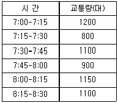
- 0.83
- 0.86
- 0.92
- 0.95
(정답률: 알수없음)
35. 교통체계관리(TSM)기법의 특징이 아닌 것은?
- 저렴한 비용필요
- 빠른효과의 효과측정 용이
- 기존시설의 최대이용
- 장기교통계획의 일부분
(정답률: 알수없음)
36. 평탄지 도로를 주행중인 차량이 돌발적인 장애물을 만나서 급제동하여 가까스로 그 직전에 멈추었다. 활주흔(skid mark)의 길이가 40m, 차량타이어와 도로면 사이의 마찰 계수가 0.6이면 이 차량은 장애물을 만나기 직전에 얼마의 속도로 주행하고 있었다고 추정되는가? (단, 운전자 반응시간은 무시하며 경사는 0% 이다.)
- 57 ㎞/시
- 66 ㎞/시
- 78 ㎞/시
- 99 ㎞/시
(정답률: 85%)
37. PIEV 시간은 교통시설 설계에서 대단히 중요한 요소이다. 도로설계에 사용되는 기준으로서 PIEV 시간은 얼마인가?
- 2.5초
- 2.0초
- 1.5초
- 1.0초
(정답률: 80%)
38. 도로를 기능적으로 분류할때 다음 도로시설 중 접근성이 뛰어난 도로는?
- 고속도로
- 국지도로
- 집산도로
- 간선도로
(정답률: 알수없음)
39. 신호 교차로에서 녹색시간을 설계할때 고려되어야 할 사항이 아닌 것은?
- 접근로의 교통량
- 횡단보도 길이
- 보행자의 속도
- 차량의 속도
(정답률: 알수없음)
40. 평면교차로의 도류화 기법(Channelization)의 원칙으로 틀린 것은?
- 교차로의 상충면적은 가능한 좁게 한다.
- 상충이 발생되는 지점은 가능한한 분리시킨다.
- 교통류는 서로 직각으로 교차하고 비스듬히 합류해야 한다.
- 직진차량은 가급적 속도를 줄이도록 유도한다.
(정답률: 64%)
3과목: 교통시설
41. 차량의 최소 회전반경의 정의로서 옳은 것은?
- 차량의 안쪽 앞바퀴의 타이어 외측선이 그리는 원의 반경
- 차량 바깥쪽 뒷바퀴의 타이어 중심선이 그리는 원의 반경
- 차량의 안쪽 뒷바퀴의 타이어 외측선이 그리는 원의 반경
- 차량의 바깥쪽 앞바퀴의 타이어 중심선이 그리는 원의 반경
(정답률: 알수없음)
42. 우리나라에서 지방지역 주요도로에 적용할 설계시간계수(K)값은?
- 200번째
- 100번째
- 50번째
- 30번째
(정답률: 알수없음)
43. 버스정류장의 제원(고속도로)중 설계속도가 100km/h일 때 가속차로의 길이는? (단, 직접식인 경우)
- 70m
- 115m
- 160m
- 190m
(정답률: 39%)
44. 다이아몬드형 인터체인지의 장점으로 볼 수 없는 것은?
- 점유면적이 적다.
- 통과거리가 짧다.
- 표지설치가 용이하다.
- 좌회전 교통의 처리가 용이하다.
(정답률: 알수없음)
45. 옥내 주차장을 차량의 이동방식에 따라 분류한 것으로 틀린 것은?
- 램프식
- 평행식
- 경사바닥식
- 기계식
(정답률: 알수없음)
46. 편도 2차로 톨게이트 상류에서 조사한 첨두시간 교통수요는 6650대 이었다. 톨게이트를 지난후 도로의 용량이 5000대/시간이며 톨게이트의 요금징수시간이 차량당 평균 10초이다. 도로운영에서 톨게이트를 통과하는 시간당 차량댓수가 도로 용량과 일치하게 되는 것이 가장 좋을 때 톨게이트의 적정 요금 징수소의 수는 얼마인가?
- 14개소
- 10개소
- 7개소
- 5개소
(정답률: 알수없음)
47. 완화곡선의 종류로 부적합한 것은?
- 클로소이드 곡선
- 렘니스케이트 곡선
- 3차 포물선
- 2차 포물선
(정답률: 70%)
48. 어느 버스터미널의 시간당 버스 도착대수가 평균 100대일 때 5분 동안 8대의 버스가 도착할 확률은? (단, 버스의 도착분포는 포아송분포를 따른다고 가정한다.)
- 1.000
- 0.713
- 0.426
- 0.139
(정답률: 80%)
49. 차종이 소형차인 주차장 설계시 중앙통로의 폭이 큰것부터 작은것 순으로 나열시 맞는 것은?
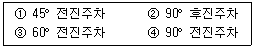
- ③-①-②-④
- ④-③-②-①
- ②-①-③-④
- ④-②-③-①
(정답률: 알수없음)
50. 교차로 설계의 기본목표는 사람이나 차량이 교차로를 편리하고 쉽게 이용하면서 보행자 또는 교통수단간의 충돌가능성을 최소화시키는 것이다. 교차로 설계시 고려해야 할 기본원리에 관한 설명으로 틀린 것은?
- 상충지점수를 충분히 늘린다.
- 상대속도를 줄인다.
- 회전교통경로를 마련한다.
- 상충면적을 줄인다.
(정답률: 알수없음)
51. 다음 인터체인지 중 가장 엇갈림(weaving)이 많이 생기는 것은 어느 것인가?
- 다이아몬드형
- 클로버잎형
- 직결형
- T형 평면교차
(정답률: 알수없음)
52. 도로설계에 사용되는 최소정지시거는 다음 중 어느 것을 기준한 값인가?
- 평지의 건조한 노면
- 평지의 젖은 노면
- 2% 하향경사의 건조 노면
- 2% 하향경사의 젖은 노면
(정답률: 37%)
53. 비상주차대에 대한 설명으로 틀린 것은?
- 고속도로에서 우측 길어깨의 폭원이 2.0m 미만일 경우에는 비상주차대를 설치하여야 한다.
- 고속도로에서의 비상주차대의 설치간격은 750m를 표준으로 한다.
- 지방지역 일반도로에서의 비상주차대의 설치간격은 750m를 표준으로 한다.
- 공사비의 절감을 위하여 길어깨를 축소하는 장대교, 터널에는 적당한 간격으로 비상주차대를 설치하여야 한다.
(정답률: 37%)
54. 완화곡선을 설치하지 않는 평면곡선에 편경사를 설치하려고 한다. 이 경우 원곡선이 시작하기전 직선상에는 전체 편경사의 얼마가 설치되어야 하는가?
- 1/3
- 2/3
- 2/5
- 1/2
(정답률: 55%)
55. 엇갈림구간(weaving)의 교통용량 산정방법에 관한 설명 중 옳지 않은 것은?
- 엇갈림구간의 형태는 엇갈림 차량의 최소차로 변경횟수와 진출입 차로의 위치에 의해 결정된다.
- 엇갈림구간 길이는 엇갈림구간 진입로와 본선이 만나는 지점에서 진출로 시작 부분까지의 거리로 한다.
- 엇갈림구간의 길이가 감소할수록 길이당 차로변경횟수가 적어진다.
- 엇갈림구간의 서비스 수준은 엇갈림하는 교통류와 엇갈림하지 않고 주행하는 교통류의 통행속도와 직접적으로 연결되어 있다.
(정답률: 알수없음)
56. 앞지르기시거를 결정하기 위해 고려하여야 할 사항으로 틀린 것은?
- 고속 자동차가 앞지르기가 가능하다고 판단하고 가속하여 반대편 차로로 진입하기 직전까지 주행한 거리
- 고속 자동차가 반대편 차로로 진입하여 앞지르기할 때까지 주행하는 거리
- 고속 자동차가 앞지르기를 완료한 후 반대편 차로의 자동차와의 여유거리
- 고속 자동차가 앞지르기를 완료한 후 마주오는 자동차가 주행한 거리
(정답률: 50%)
57. 평면교차로에서의 신호등 설치기준에 대한 사항으로 잘못된 것은?
- 어린이 보호구역내 초등학교 또는 유치원의 주 출입문과 가장 가까운 거리에 위치한 횡단보도에 신호기를 설치한다.
- 학교앞 300m이내에 신호등이 없고 통학시간에 차량통행시간 간격이 1분 이내인 경우에 신호등을 설치한다.
- 신호등의 설치간격이 300m 이상으로 인접 신호등과의 연동효과를 기대할 수 없을 때 중간지점에 신호등을 설치한다.
- 교통사고가 연간 7회 이상 발생한 장소로 신호등 설치 시 사고를 예방할 수 있다고 인정되는 경우 신호등을 설치한다.
(정답률: 37%)
58. 다음 중 콘크리트 포장과 비교한 아스팔트 포장의 장점으로 옳은 것은?
- 유지·보수비가 적게 든다.
- 유지·보수가 쉽다.
- 그늘에서 박리하지 않는다.
- 지반이 약한 지역에 유리하다.
(정답률: 55%)
59. 고속도로에서 우측 길어깨의 폭원이 얼마 미만일 경우 비상주차대를 설치해야 하는가?
- 3.0m
- 2.5m
- 2.0m
- 1.5m
(정답률: 알수없음)
60. 도시지역 간선 도로 보도의 최소폭은?
- 1.5m
- 2.0m
- 3.0m
- 4.0m
(정답률: 알수없음)
4과목: 도시계획개론
61. 도시지역안에서 공공의 안녕질서와 도시기능의 증진을 위해서 필요하다고 인정할 때에는 지구의 지정을 도시관리계획으로 결정할 수 있는데 지구의 종류가 아닌 것은?
- 미관지구
- 고도지구
- 보존지구
- 재개발지구
(정답률: 알수없음)
62. 상업 업무지구에서 비교적 적절한 구획도로망 형태는 어떠한 것인가?
- 루프형
- 쿨데삭(cul-de-sac)
- 격자형
- 선형
(정답률: 알수없음)
63. 고대 그리이스 도시에서 교역과 정치활동의 중심지였던 시장광장을 무엇이라고 하는가?
- 포럼(Forum)
- 아고라(Agora)
- 시데룽(Siedelung)
- 휘닉스(Pnyx)
(정답률: 알수없음)
64. 주거 단지내 도로 계획시 일반적 고려사항이 아닌 것은?
- 단지내 도로의 과속 방지턱 설치
- 곡선형 도로로 감속 유도
- 원할한 통과를 위한 통과도로의 최대화
- 도로패턴은 원활한 접근을 위한 조직적으로 계획
(정답률: 알수없음)
65. 우리나라 도시 가로망 배치계획에서 일반적인 원칙과 가장 거리가 먼 것은?
- 간선도로의 경우 도심부와 도시 외곽부에서의 도로의 배치간격은 각각 1㎞, 1∼3㎞정도가 바람직하다.
- 보조간선도로는 도심에서 300∼500m 간격으로 배치하는 것이 적당하다.
- 집분산 도로의 배치간격은 주거지역에서 250∼500m간격으로 배치하는 것이 적당하다.
- 국지도로는 지구의 특성에 따라 배치간격이 정해지며 간선도로, 보조간선도로를 연결할 수 있도록 계획한다.
(정답률: 알수없음)
66. 도시(지역)경제학의 주요이론으로 거리가 먼 것은?
- 경제기반이론
- 투입산출분석
- 변이할당분석
- 효용함수이론
(정답률: 50%)
67. 다음 하워드(E.Howard)가 제시한 전원도시의 요건에 해당되지 않는 것은?
- 인구규모의 확대
- 토지의 공개념
- 경제적 가족성
- 개발이익의 사회환원
(정답률: 알수없음)
68. 도시기본계획을 수립할때 공청회 개최는 언제 하는가?
- 도시계획 조사 이전
- 기본계획 승인 이후
- 기본계획 수립시
- 기본계획 공고 이후
(정답률: 알수없음)
69. 많은 학자들에 의해 근린주구에 대한 기준들이 제안되어지고 있다. 다음 중에서 근린주구의 설정기준에 해당되지 않는 내용은?
- 밀도
- 거리
- 이용빈도
- 시설물
(정답률: 알수없음)
70. 슈퍼블록(super block)의 개념을 설명한 것으로 가장 거리가 먼 것은?
- 통과 교통을 방지하고 가구내 편익시설을 갖추어 생활의 편리를 도모하는데 목적이 있다.
- 블록내 자동차 접근이 어렵기 때문에 인근 주차장이 필요하다.
- 보통 소형블럭(50×100m)을 4∼5개를 합친 규모이다.
- 블록 단위로 계획, 설계가 행해져 소형 블록의 단점인 공간의 이용에 효율성을 제고하고자 한다.
(정답률: 40%)
71. 상업시설 용지의 배치유형을 집중형과 노선형으로 나눌 때 집중형의 장점이 아닌 것은?
- 시설의 다양성, 이용자 선택성이 커짐
- 시설상호간의 유기적 관계성이 높음
- 상품, 서비스 유형에 따른 이용권이 명확한 위계를 가짐
- 모든 주민에게 균등한 접근성을 부여
(정답률: 알수없음)
72. 우리나라의 국토계획의 변경과정 중에서 거점개발방식이 채택되었던 시기는?
- 제1차국토계획
- 제2차국토계획
- 제2차국토(수정)계획
- 제3차국토계획
(정답률: 30%)
73. 보행으로 중심부와 연결이 가능하며, 초등학교, 상가 등의 공동서비스 시설을 공유하는 규모로서 주민간의 동질성이 강조되는 계획적 공간범위는?
- 인보구
- 근린분구
- 근린주구
- 지역공동체
(정답률: 알수없음)
74. 공간적으로 분리되어 있으나 기능적으로 서로 연결되어 있는 도시군을 지칭하는데 가장 적합한 명칭은?
- 도시지역(urban reion)
- 거대 도시(megalopolis)
- 연담 도시(conurbation)
- 위성 도시(satellite cities)
(정답률: 알수없음)
75. 도시의 무질서한 확산을 방지하고 도시주변의 자연환경의 보전을 통한 도시민의 건전한 생활환경을 확보하기 위하여 도시개발을 제한하는 것을 목적으로 하는 것은 다음 중 어느 것인가?
- 특정시설제한구역
- 개발제한구역
- 도시개발예정구역
- 광역계획구역
(정답률: 알수없음)
76. 도시재개발에 있어서 도시기능과 생활환경이 점차 악화되고 있는 대상지에서 건축물의 신축을 부분적으로 허용하며, 나머지 건축물을 수리, 개조함으로서 점진적으로 개조하는 재개발수법은?
- 철거재개발
- 수복재개발
- 전면재개발
- 보전재개발
(정답률: 알수없음)
77. kevin Lynch의 도시공간(경관)의 형성요소에 포함되지 않는 것은?
- 통로(path)
- 경계(edge)
- 상징물(landmark)
- 자연(nature)
(정답률: 알수없음)
78. 다음과 같은 가로망 형태는?
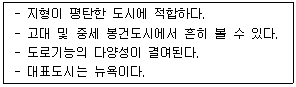
- 방사형
- 혼합형
- 방사환상형
- 격자형
(정답률: 알수없음)
79. 도시관리계획결정의 고시가 있은 때에는 지적이 표시된 지형도에 도시관리계획사항을 명시한 도면을 작성하여야 하는데 이때 일반적인 도시지역의 경우 축척으로 옳은 것은?
- 축척 500분의 1 ∼ 1천 500분의 1
- 축척 1천500분의 1 ∼ 3천분의 1
- 축척 3천분의 1 ∼ 4천 500분의 1
- 축척 4천 500분의 1 ∼ 6천분의 1
(정답률: 알수없음)
80. 우리나라에서 시행하고 있는 인구주택총조사에 대한 설명으로 부적절한 내용은?
- 지정통계조사
- 5년주기 조사
- 전항목에 대한 전수조사
- 11월 1일이 조사기준시점
(정답률: 알수없음)
5과목: 교통관계법규
81. 차마는 도로의 중앙으로부터 우측부분을 통행하여야 하는 것이 원칙이다. 하지만 도로의 중앙이나 좌측부분을 통행할 수 있는 경우가 아닌 것은?
- 도로가 일방통행일 때
- 도로의 파손으로 우측부분을 통행할 수 없는 때
- 도로의 좌측부분의 폭이 통행에 충분하지 아니한 때
- 도로의 우측부분의 폭이 6미터가 되지 아니한 도로에서 다른차를 앞지르기하고자 하는 때. 다만, 반대방향의 교통을 방해할 염려가 없고, 앞지르기가 제한되지 아니한 경우
(정답률: 60%)
82. 다음 중 도로의 구분에 따른 도시지역의 설계속도가 잘못된 것은?
- 고속도로 : 100km
- 주간선도로 : 80km
- 보조간선도로 : 60km
- 국지도로 : 50km
(정답률: 알수없음)
83. 주차장의 설치의무가 면제되는 경우는 다음중 어느 경우인가?
- 부설주차장의 규모로 주차대수 10대 이하
- 시설물의 용도 및 규모에 있어 연면적 2천 제곱미터 이상의 위락시설
- 도로교통법에 의한 차량통행의 금지되는 장소
- 연면적 5천 제곱미터 이상의 숙박시설
(정답률: 알수없음)
84. 국토의계획및이용에관한법률상 지구의 지정에서 보존지구를 지정하는 목적으로 옳은 것은?
- 문화재 보존을 위하여
- 자연경관 보존을 위하여
- 그린벨트 보존을 위하여
- 도시미관 유지를 위하여
(정답률: 알수없음)
85. 도로의 종단경사는 도로의 설계속도에 따라 차이가 있다. 도로의 구조 시설기준에 관한 규칙에 설계속도 60km/hr인 평지부 간선도로에서의 일반적인 경우의 최대 종단경사는 얼마 이하인가?
- 2%
- 3%
- 5%
- 7%
(정답률: 알수없음)
86. 도로의 유형중 지방도에 대한 설명으로 옳지 못한 것은?
- 도청소재지로 부터 시청 또는 군청소재지에 이르는 도로
- 시청 또는 군청소재지 상호간을 연결하는 도로
- 중요도시, 지정항만, 중요한 비행장 또는 관광지등을 연결하며 고속국도와 함께 국가기간 도로망을 이루는 도로
- 도내의 비행장, 항만, 역에서 이와 밀접한 관계가 있는 고속국도, 국도 또는 지방도를 연결하는 도로
(정답률: 67%)
87. 다음 중 평균운행속도에 대한 설명으로 맞는 것은?
- 구간거리를 평균주행시간으로 나누어 구한다.
- 도로상의 일정구간을 통과하는 관측차량의 조화평균속도
- 구간거리를 지체시간을 포함한 차량운행시간으로 나누어 구한다.
- 도로상의 일정지점을 통과하는 관측차량의 산술평균속도
(정답률: 28%)
88. 도시지역 일반도로에 적용되는 차로의 최소 폭원으로 잘못된 것은?
- 설계속도 80km/h 이상 : 3.25m
- 설계속도 70km/h 이상 : 3.25m
- 설계속도 60km/h 미만 : 3.0m
- 회전차로 : 2.5m 이상
(정답률: 알수없음)
89. 다음은 도시기본계획의 수립을 위한 공청회 및 의견청취에 대한 설명이다. 틀린 것은?
- 특별시장, 광역시장, 시장, 군수 등은 공청회를 열어 주민 및 관계 전문가로부터 의견을 들어야 한다.
- 공청회를 개최하고자 하는 때에는 개최예정일 1일 전까지 1회이상 공고하여야 한다.
- 공청회에서 제시된 의견이 타당하다면 도시기본계획수립에 반영하여야 한다.
- 특별시장, 광역시장, 시장, 또는 군수는 도시기본계획 수립시 미리 당해 특별시, 광역시, 시, 또는 군의 의회의 의견을 들어야 한다.
(정답률: 알수없음)
90. 지하매설물을 공동 수용함으로써 도시의 미관, 도로구조의 보전과 원활한 교통의 소통을 위하여 지하에 설치하는 시설물을 무엇이라고 하는가?
- 공동구
- 지하 관리구
- 지하 공동구
- 매설구
(정답률: 알수없음)
91. 도시교통정비지역을 선정하는 기준은 무엇인가?
- 주차장면수
- 자동차등록대수
- 상주인구
- 행정구역
(정답률: 알수없음)
92. 신호등이 없는 교차로에서 설계속도에 따른 최소시거가 틀린 것은?
- 설계속도 20km/h 에서 최소시거 25m
- 설계속도 40km/h 에서 최소시거 60m
- 설계속도 30km/h 에서 최소시거 40m
- 설계속도 60km/h 에서 최소시거 120m
(정답률: 알수없음)
93. 도로의 관리청은 도로정비기본계획수립과 타당성 여부를 각각 몇 년마다 수립· 검토하는가?
- 10년, 5년
- 20년, 10년
- 10년, 10년
- 20년, 20년
(정답률: 알수없음)
94. 도로교통법상 앞지르기가 금지된 장소를 나열한 것이다. 옳은 것은?
- 횡단보도, 교차로, 터널 안, 다리 위
- 비탈길의 고개마루 부근, 가파른 비탈길의 내리막
- 도로의 구부러진 곳, 버스정류장 부근, 학교 앞
- 가파른 비탈길의 오르막, 안전지대가 설치된 곳
(정답률: 46%)
95. 도시교통정비기본계획의 수립을 위하여 다음과 같은 기초 조사를 하여야 한다. 필요조사 사항이 아닌 것은?
- 사회경제 지표현황
- 자동차 보유현황
- 토지 이용현황
- 자동차 생산시설현황
(정답률: 59%)
96. 교통안전법상 교통안전 기본계획은 몇년마다 수립하는가?
- 10년
- 5년
- 3년
- 1년
(정답률: 알수없음)
97. 도로를 개축하는 공사계획을 확정한 때에는 건설교통부령이 정하는 바에 의하여 지체없이 공고해야 하는 사항과 관계가 먼 것은?
- 공사시설의 방법
- 노선명
- 당해공사의 구간
- 시행기간
(정답률: 37%)
98. 다음 교통영향평가 재평가 사유중에서 재평가를 시행할 수 있는 경우는?
- 사업지와 가장 근접한 도로에서 자동차의 평균주행속도가 교통영향평가 예측보다 30%이상 감소한 경우
- 사업지와 가장 근접한 도로에서 자동차의 평균주행속도가 교통영향평가 예측보다 10%이상 감소한 경우
- 사업지와 가장 근접한 교차로에서 자동차의 평균지체가 교통영향평가 예측보다 30%이상 증가한 경우
- 사업지와 가장 근접한 교차로에서 자동차의 평균지체가 교통영향평가 예측보다 10%이상 증가한 경우
(정답률: 54%)
99. ( ) 속에 들어갈 내용은?
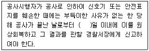
- 3
- 5
- 7
- 10
(정답률: 알수없음)
100. 주차장법에 의한 주차장의 종류로 볼 수 없는 것은?
- 노상주차장
- 노외주차장
- 부설주차장
- 지하주차장
(정답률: 알수없음)
6과목: 교통안전
101. 다음 중 교통안전과 가장 밀접한 관계가 있는 시력은?
- 광안성
- 정지시력
- 동체시력
- 정사시력
(정답률: 알수없음)
102. 교통사고에 대한 일반적인 설명 중 옳지 않은 것은?
- 교통사고는 속도가 높을수록 치사율은 높다.
- ㎞당 평균사고율은 지방부도로 보다 고속도로가 낮다.
- 커브지점의 사고는 정면 충돌사고가 많다.
- 교차로내의 사고는 주로 직각충돌 사고가 많다.
(정답률: 알수없음)
103. 차량이 노면에서 미끄러질 때 감속도가 6.9m/sec2이었다면 마찰계수는 얼마인가?
- 0.5
- 0.7
- 0.8
- 0.9
(정답률: 90%)
104. 사고경험에 기초한 위험지점 선정을 위해 사용되는 기법이 아닌 것은?
- 사고율법
- 사고건수법
- 율-품질관리법
- 사고위험율법
(정답률: 알수없음)
1⑤. 약한 지주와 강한 레일로 구성되어 충격차량을 억제하는데 주로 레일요소의 작용에 의존하는 방호책은?
- 연성방호책
- 반강성방호책
- 강성방호책
- 콘크리트방호책
(정답률: 80%)
106. 사고충돌도의 범례 중 다음 그림이 상징하는 것은?
- 전복한 차량
- 측면충돌
- 통제상실
- 추돌사고
(정답률: 73%)
107. 고속도로와 기타도로를 비교할 때 고속도로 수준의 도로설계가 줄일 수 있는 사고는?
- 단독차량 충돌
- 통제상실
- 정면충돌
- 추돌
(정답률: 82%)
108. 운전면허 소지자 50,000명의 지난 5년간 사고경력을 조사하였다. 전체교통사고는 10,000건이다. 지난 5년간 3회 이상 교통사고를 일으킨 사람을 교통사고 상습자로 관리하고자 한다. 교통사고 상습자는 몇 명으로 추정되는가?
- 80인
- 75인
- 66인
- 57인
(정답률: 알수없음)
109. 자동차가 주행할때 타이어의 공기압이 적은 상태이면 타이어 접지면이 압축되어 변형하면서 회전하므로 타이어가 물결치는 모양이 되는데 이러한 현상을 무엇이라고 하는가?
- 하이드로 플래닝(hydro planing)현상
- 스탠딩 웨이브(standing wave)현상
- 스키드(skid)현상
- 드라이브(drive)현상
(정답률: 알수없음)
110. 교통사고연구를 위한 도시지역 도로의 표준구간장은?
- 0.8km
- 0.6km
- 0.4km
- 0.2km
(정답률: 알수없음)
111. 사고의 재구성에 대한 설명 중 옳지 않은 것은?
- 사고의 재구성은 속도, 도로상에서의 위치에 대한 추론을 포함한다.
- 교통통제장비의 지각과 이해에 대한 추론은 관련이 없다.
- 측량의 자료가 부족할 때 사진의 이용이 가능하면 재구성을 위한 도면자료를 얻기 위하여 기초적인 사진측량술을 이용할 수도 있다.
- 사고의 재구성에서 가장 기본적인 것은 정지 및 미끄럼흔적, 회전시의 편주흔적, 가속 및 충돌흔적 등 도로의 타이어 자국을 인식할 수 있는 능력이다.
(정답률: 알수없음)
112. 운전자의 반응과정을 바르게 연결한 것은?
- 주의 - 의사결정 - 반응 - 인식
- 인식 - 주의 - 의사결정 - 반응
- 인식 - 주의 - 반응 - 의사결정
- 주의 - 인식 - 의사결정 - 반응
(정답률: 50%)
113. 50km의 도로 구간에서 1년동안 60건의 교통사고가 발생하였다. 조사결과 일평균교통량(ADT)이 8,000이고, 총 사고 건수중 5%가 치명적인 사고였다면 1억차량 km당 치명적사고 발생율은 얼마인가?
- 1.80
- 2.00
- 2.⑤
- 2.30
(정답률: 70%)
114. EPDO가 의미하는 것은?
- 등가사망사고
- 등가중상사고
- 등가경상사고
- 등가물피사고
(정답률: 알수없음)
115. 교통사고 충돌도에 관한 다음의 설명중 옳지 않는 것은?
- 사고의 패턴을 파악할 수 있다.
- 사고다발지점의 물리적 현황을 나타낸다.
- 개선책의 시행에 따른 결과를 분석할수 있다.
- 축척을 무시하고 작도된다.
(정답률: 알수없음)
116. 율-품질관리법에서 가정하는 교통사고 발생분포는?
- 포아송 분포
- 이항분포
- 음지수분포
- 지수분포
(정답률: 알수없음)
117. 각각 2차로인 도로가 직각으로 교차하는 교차로에서는 상충지점이 32개소가 나타나게 되어 사고의 위험요소로 작용한다. 만약 이교차로에서 각 진입로마다 좌회전을 금지시키면 상충지점은 몇 개로 감소하는가?
- 4
- 6
- 12
- 24
(정답률: 알수없음)
118. 다음 중 운전자가 나타내는 여러가지 반응 중 반응시간이 가장 긴 것은?
- 반사반응(Reflex reaction)
- 단순반응(Simple reaction)
- 복합반응(Complex reaction)
- 판별반응(Discriminative reaction)
(정답률: 알수없음)
119. 다음의 교통안전조치중 이동성과 상충하지 않는 조치는?
- 안전벨트
- 접근을 제한하는 가로배치
- 속도제한
- 과속방지턱
(정답률: 알수없음)
120. 교통사고의 유발인자를 크게 세가지로 나눌 때 이에 속하지 않는 것은?
- 도로 사용자
- 교통정책
- 차량
- 환경
(정답률: 알수없음)